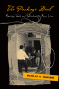

|
|
Acres
of Diamonds
Conwell, Russell H., Russell F. Weigley, and David Adamany
A new edition of the classic inspirational speech
96 pp • Spring 2002
cloth 1-56639-962-9
EAN 978-1-56639-962-3
|
|
|
Black
Theatre
Ritual Performance in the African Diaspora
Harrison, Paul Carter, Victor Leo Walker II, and Gus Edwards
An insider's view of Black theatres of the world and how they reflect
their culture, concerns, and history
432 pp • 7x10 • Spring 2002
paper 1-56639-944-0
EAN 978-1-56639-944-9
cloth 1-56639-943-2
EAN 978-1-56639-943-2
|
|
|
Contemporary
Asian American Communities
Intersections and Divergences
V�, Linda Trinh, and Rick Bonus Surveying the new contours
of Asian America
264 pp • 7x10 • Spring 2002
paper 1-56639-938-6
EAN 978-1-56639-938-8
cloth 1-56639-937-8
EAN 978-1-56639-937-1
|
|
|
The
Difference that Disability Makes
Michalko, Rod Excluding disabled people is a political act;
so is choosing disability
208 pp • 6x9 • Spring 2002
paper 1-56639-934-3
EAN 978-1-56639-934-0
cloth 1-56639-933-5
EAN 978-1-56639-933-3
|
| 
|
Empire
City
The Making and Meaning of the New York City Landscape
Scobey, David M. How did New York City come to represent
the best and worst of urban life?
352 pp • 7x10 • Spring 2002
cloth 1-56639-950-5
EAN 978-1-56639-950-0
|
|
|
Fireweed
A Political Autobiography
Lerner, Gerda
A beautifully written, dramatic memoir from one of women's history's
founders
408 pp • 7x10 • Spring 2002
cloth 1-56639-889-4
EAN 978-1-56639-889-3
|
|
|
Growing
Up with Television
Everyday Learning Among Young Adolescents
Fisherkeller, JoEllen A powerful interdisciplinary book
on how young adults watch—and learn from—television
224 pp • 6x9 • Spring 2002
paper 1-56639-953-X
EAN 978-1-56639-953-1
cloth 1-56639-952-1
EAN 978-1-56639-952-4
|
| 
|
Larry
Kane's Philadelphia
Kane, Larry, and Dan Rather
A first-hand look at Philadelphia's important events and people
New in Paperback!
280 pp • 6x9 • Fall 2000
paper 1-56639-961-0
EAN 978-1-56639-961-6
|
|
|
Marx
on Religion
Raines, John A primer of the often overlooked yet significant
writings of Marx on religion
256 pp • 6x9 • Spring 2002
paper 1-56639-940-8
EAN 978-1-56639-940-1
cloth 1-56639-939-4
EAN 978-1-56639-939-5
|
| 
|
New
Jack Jocks
Rebels, Race, and the American Athlete
Platt, Larry The hero and anti-hero in contemporary sport,
from a bestselling journalist
208 pp • 5.5x8.25 • Spring 2002
cloth 1-56639-954-8
EAN 978-1-56639-954-8
|
| 
|
The
Package Deal
Marriage, Work, and Fatherhood in Men's Lives
Townsend, Nicholas W. A book about understanding men's lives
in the modern world
264 pp • 6x9 • Spring 2002
paper 1-56639-958-0
EAN 978-1-56639-958-6
cloth 1-56639-957-2
EAN 978-1-56639-957-9
|
| 
|
The
Philadelphia Area Weather Book
Nese, Jon, Glenn Schwartz, and Edward G. Rendell (foreword)
A book for every season
264 pp • 8.5 x 11 • Spring 2002
cloth 1-56639-956-4
EAN 978-1-56639-956-2
|
|
|
Re/collecting
Early Asian America
Essays in Cultural History
Lee, Josephine, Imogene Lim, and Yuko Matsukawa An interdisciplinary
reexamination of a fragmented history
384 pp • 7x10 • Spring 2002
paper 1-56639-964-5
EAN 978-1-56639-964-7
cloth 1-56639-963-7
EAN 978-1-56639-963-0
|
|
|
Specular
City
The Transformation of Culture, Consumption, and Space after Per�n
Podalsky, Laura A rich history of Buenos Aires during the
inter-Per�nist years, and a history-in-miniature of the modernization
of Latin America
304 pp • 7x10 • Spring 2002
paper 1-56639-948-3
EAN 978-1-56639-948-7
cloth 1-56639-947-5
EAN 978-1-56639-947-0
|
|
|
Teenagers
and Teenpics
The Juvenilization of American Movies in the 1950s
Doherty, Thomas The classic book on teenagers and their
films, thoroughly revised and expanded
288 pp • 6x9 • Spring 2002
paper 1-56639-946-7
EAN 978-1-56639-946-3
cloth 1-56639-945-9
EAN 978-1-56639-945-6
|
| 
|
The
U.S. Army War College
Military Education in a Democracy
Stiehm, Judith Hicks A look inside the U.S. Army War College
272 pp • 6x9 • Spring 2002
paper 1-56639-960-2
EAN 978-1-56639-960-9
cloth 1-56639-959-9
EAN 978-1-56639-959-3
|
|
|
The
Unwanted
European Refugees from the First World War Through the Cold War
Marrus, Michael R., and Aristide R. Zolberg The classic,
comprehensive history of European refugees in the twentieth century
432 pp • 6x9 • Spring 2002
paper 1-56639-955-6
EAN 978-1-56639-955-5
|
|
|
Vegetarianism
Movement or Moment?
Maurer, Donna The
strategies and beliefs of vegetarian groups
216 pp • 5.5x8.25 • Spring 2002
paper 1-56639-936-X
EAN 978-1-56639-936-4
cloth 1-56639-935-1
EAN 978-1-56639-935-7
|
|
|
White
Boy
A Memoir
Naison, Mark D. A life on the
front-lines of academic and social change
240 pp • 6x9 • Spring 2002
paper 1-56639-942-4
EAN 978-1-56639-942-5
cloth 1-56639-941-6
EAN 978-1-56639-941-8
|
|
|
Winningest
Pitchers
Baseball's 300-Game Winners
Westcott, Rich
A detailed look at the few immortal 300 game winning pitchers
216 pp • 5.5x8.25 • Spring 2002
paper 1-56639-949-1
EAN 978-1-56639-949-4
|